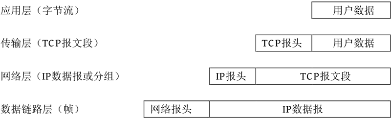
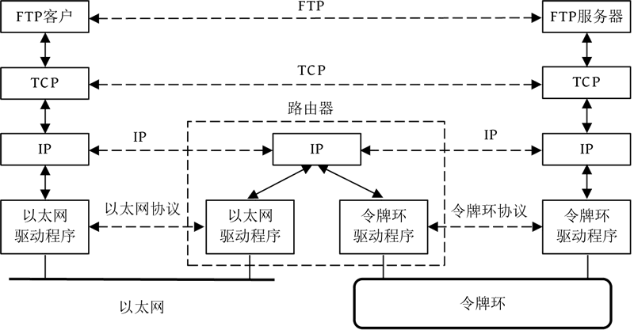
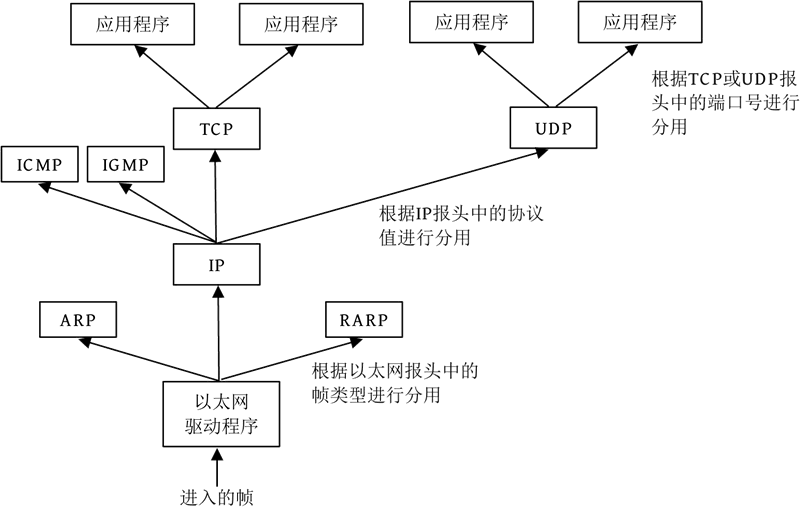
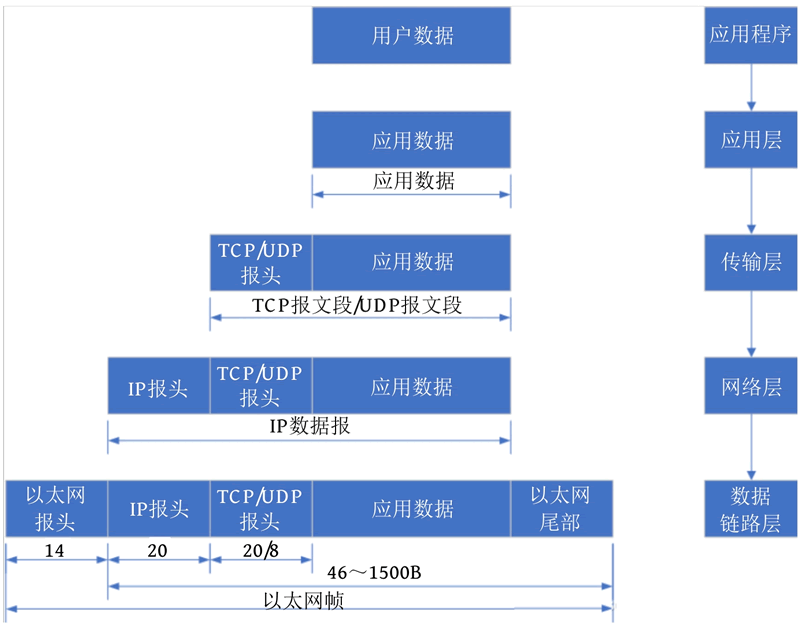

首页 > 编程笔记
TCP/IP协议介绍（超级详细）
TCP/IP（Transmission Control Protocol/Internet Protocol，传输控制协议/互联网协议）是互联网的基本协议，也是国际互联网络的基础。
TCP/IP 不是指一个协议，也不是 TCP 和 IP 这两个协议的合称，而是一个协议族，包括多个网络协议，比如 IP、ICMP（Internet Control Message Protocol，互联网控制报文协议）、TCP、HTTP（Hyper Text Transfer Protocol，超文本传输协议）、FTP（File Transfer Protocol，文件传输协议）、POP3（Post Office Protocol version 3，邮局协议）等。
TCP/IP 定义了计算机操作系统如何连入互联网，以及数据传输的标准。
TCP/IP 是为了解决不同系统的计算机之间的传输通信而提出的一个标准，不同系统的计算机采用了同一种协议后，就能相互通信，从而能够建立网络连接，实现资源共享和网络通信。就像两个不同国家的人，用同一种语言就能相互交流了。
应用层包含所有的高层协议，比如 Telnet（Telecommunications Network，远程登录协议）、FTP、SMTP（Simple Mail Transfer Protocol，简单邮件传输协议）、DNS（Domain Name Service，域名服务）、NNTP（Net News Transfer Protocol，网络新闻传输协议）和 HTTP 等。Telnet 允许一台机器上的用户登录远程机器进行工作，FTP 提供将文件从一台机器上移到另一台机器上的有效方法，SMTP用于电子邮件的收发，DNS 用于把主机名映射到网络地址，NNTP 用于新闻的发布、检索和获取，HTTP 用于在 WWW 上获取主页。
应用层的下面一层是传输层，著名的 TCP 和 UDP（User Datagram Protocol，用户数据报协议）就在这一层。TCP 是面向连接的协议，它提供可靠的报文传输和对上层应用的连接服务。为此，除了基本的数据传输外，它还有可靠性保证、流量控制、多路复用、优先权和安全性控制等功能。UDP 是面向无连接的不可靠传输协议，主要用于不需要TCP的排序和流量控制等功能的应用程序。
传输层的下面一层是网络层，该层是整个 TCP/IP 体系结构的关键部分，其功能是使主机可以把数据报（Packet，或称为分组）发往任何网络，并使分组独立地传向目标。这些分组经由不同的网络到达的顺序和发送的顺序可能不同。网络层使用的协议有 IP。
网络层的下面是数据链路层，该层是整个体系结构的基础部分，负责接收 IP 层的 IP 数据报，通过网络向外发送，或接收从网络上来的物理帧，抽出 IP 数据报，向 IP 层发送。该层是主机与网络的实际连接层。
数据链路层下面就是实体线路（比如以太网络、光纤网络等）。数据链路层有以太网、令牌环网等标准，负责网卡设备的驱动、帧同步（就是从网线上检测到什么信号算作新帧的开始）、冲突检测（如果检测到冲突就自动重发）、数据差错校验等工作。交换机可以在不同的数据链路层的网络之间（比如十兆以太网和百兆以太网之间、以太网和令牌环网之间）转发数据帧，由于不同数据链路层的帧格式不同，交换机要将进来的数据报拆掉报头重新封装之后再转发。
不同的协议层对数据报有不同的称谓，在传输层叫作段（Segment），在网络层叫作数据报（Datagram），在数据链路层叫作帧（Frame）。数据封装成帧后发送到传输介质上，到达目的主机后，每层协议再剥掉相应的报头，最后将应用层数据交给应用程序处理。
不同层包含不同的协议，可以使用下图来表示各个协议及其所在的层。

在主机发送端，从传输层开始会把上一层的数据加上一个报头形成本层的数据，这个过程称为数据封装。在主机接收端，从最下层开始，每一层数据会去掉报头信息，该过程称为数据解封。其过程如下图所示。
我们来看一个例子。以浏览某个网页为例，看一下浏览网页的过程中 TCP/IP 各层做了哪些工作。
发送方：
互联网上有路由器，它会读取比特流中的 IP 地址进行路由操作，到达正确的网段后，这个网段的交换机读取比特流中的 MAC 地址，从而找到要接收的对应机器。
接收方：
如果两台计算机位于不同的网段中，那么数据从一台计算机到另一台计算机传输的过程中要经过一个或多个路由器，如下图所示。
目的主机收到数据报后，如何经过各层协议栈最终到达应用程序呢？整个过程如下图所示：
以太网驱动程序首先根据以太网报头中的“上层协议”字段确定该数据帧的有效载荷（Payload，指除去协议报头之外实际传输的数据）是 IP、ARP 或 RARP 的数据报，然后交给相应的协议处理。假如是 IP 数据报，IP 再根据 IP 报头中的“上层协议”字段确定该数据报的有效载荷是 TCP、UDP、ICMP 或 IGMP，然后交给相应的协议处理。假如是 TCP 段或 UDP 段，TCP 或 UDP 再根据 TCP 报头或 UDP 报头的“端口号”字段确定应该将应用层数据交给哪个用户进程。IP 地址是标识网络中不同主机的地址，而端口号是同一台主机上标识不同进程的地址，IP 地址和端口号合起来标识网络中唯一的进程。
注意，虽然 IP、ARP 和 RARP 数据报都需要以太网驱动程序来封装成帧，但是从功能上划分，ARP 和 RARP 属于数据链路层，而 IP 属于网络层。虽然 ICMP、IGMP、TCP、UDP 的数据都需要 IP 协议来封装成数据报，但是从功能上划分，ICMP、IGMP 与 IP 同属于网络层，而 TCP 和 UDP 属于传输层。
上面可能讲得有点繁杂，再用一张简图来总结一下 TCP/IP 模型对数据的封装，如下图所示。、
每一层数据是由上一层数据+本层报头信息组成的，其中每一层的数据称为本层的协议数据单元（Protocol Data Unit，PDU）。
当目的主机收到一个以太网数据帧时，通过匹配帧中的 MAC 地址发现目的地是本机，数据就开始在协议栈中由底向上升，同时去掉各层协议加上的报头。每层协议盒都要去检查报头中的协议标识，以确定接收数据的上层协议。
TCP/IP 不是指一个协议，也不是 TCP 和 IP 这两个协议的合称，而是一个协议族，包括多个网络协议，比如 IP、ICMP（Internet Control Message Protocol，互联网控制报文协议）、TCP、HTTP（Hyper Text Transfer Protocol，超文本传输协议）、FTP（File Transfer Protocol，文件传输协议）、POP3（Post Office Protocol version 3，邮局协议）等。
TCP/IP 定义了计算机操作系统如何连入互联网，以及数据传输的标准。
TCP/IP 是为了解决不同系统的计算机之间的传输通信而提出的一个标准，不同系统的计算机采用了同一种协议后，就能相互通信，从而能够建立网络连接，实现资源共享和网络通信。就像两个不同国家的人，用同一种语言就能相互交流了。
TCP/IP的分层结构
TCP/IP 协议族按照层次由上到下分成 4 层，分别是应用层（Application Layer）、传输层（Transport Layer）、网络层（Internet Layer，或称网际层）和网络接口层（Network Interface Layer，或称数据链路层）。应用层包含所有的高层协议，比如 Telnet（Telecommunications Network，远程登录协议）、FTP、SMTP（Simple Mail Transfer Protocol，简单邮件传输协议）、DNS（Domain Name Service，域名服务）、NNTP（Net News Transfer Protocol，网络新闻传输协议）和 HTTP 等。Telnet 允许一台机器上的用户登录远程机器进行工作，FTP 提供将文件从一台机器上移到另一台机器上的有效方法，SMTP用于电子邮件的收发，DNS 用于把主机名映射到网络地址，NNTP 用于新闻的发布、检索和获取，HTTP 用于在 WWW 上获取主页。
应用层的下面一层是传输层，著名的 TCP 和 UDP（User Datagram Protocol，用户数据报协议）就在这一层。TCP 是面向连接的协议，它提供可靠的报文传输和对上层应用的连接服务。为此，除了基本的数据传输外，它还有可靠性保证、流量控制、多路复用、优先权和安全性控制等功能。UDP 是面向无连接的不可靠传输协议，主要用于不需要TCP的排序和流量控制等功能的应用程序。
传输层的下面一层是网络层，该层是整个 TCP/IP 体系结构的关键部分，其功能是使主机可以把数据报（Packet，或称为分组）发往任何网络，并使分组独立地传向目标。这些分组经由不同的网络到达的顺序和发送的顺序可能不同。网络层使用的协议有 IP。
网络层的下面是数据链路层，该层是整个体系结构的基础部分，负责接收 IP 层的 IP 数据报，通过网络向外发送，或接收从网络上来的物理帧，抽出 IP 数据报，向 IP 层发送。该层是主机与网络的实际连接层。
数据链路层下面就是实体线路（比如以太网络、光纤网络等）。数据链路层有以太网、令牌环网等标准，负责网卡设备的驱动、帧同步（就是从网线上检测到什么信号算作新帧的开始）、冲突检测（如果检测到冲突就自动重发）、数据差错校验等工作。交换机可以在不同的数据链路层的网络之间（比如十兆以太网和百兆以太网之间、以太网和令牌环网之间）转发数据帧，由于不同数据链路层的帧格式不同，交换机要将进来的数据报拆掉报头重新封装之后再转发。
不同的协议层对数据报有不同的称谓，在传输层叫作段（Segment），在网络层叫作数据报（Datagram），在数据链路层叫作帧（Frame）。数据封装成帧后发送到传输介质上，到达目的主机后，每层协议再剥掉相应的报头，最后将应用层数据交给应用程序处理。
不同层包含不同的协议，可以使用下图来表示各个协议及其所在的层。
在主机发送端，从传输层开始会把上一层的数据加上一个报头形成本层的数据，这个过程称为数据封装。在主机接收端，从最下层开始，每一层数据会去掉报头信息，该过程称为数据解封。其过程如下图所示。

我们来看一个例子。以浏览某个网页为例，看一下浏览网页的过程中 TCP/IP 各层做了哪些工作。
发送方：
- 打开浏览器，输入网址 www.xxx.com，按回车键来访问网页，其实就是访问 Web 服务器上的网页，在应用层采用的协议是 HTTP，浏览器将网址等信息组成 HTTP 数据，并将数据传送给传输层。
- 传输层在数据前面加上 TCP 报头，并标记端口为 80（Web 服务器的默认端口），将这个数据段给了网络层。
- 网络层在这个数据段前面加上自己机器的 IP 和目的 IP，这时该段被称为 IP 数据报，然后将这个 IP 数据报给了数据链路层。
- 数据链路层先在 IP 数据报前面加上自己机器的 MAC 地址以及目的 MAC 地址，加上 MAC 地址的数据称为帧，然后通过物理网卡把这个帧以比特流的方式发送到网络上。
互联网上有路由器，它会读取比特流中的 IP 地址进行路由操作，到达正确的网段后，这个网段的交换机读取比特流中的 MAC 地址，从而找到要接收的对应机器。
接收方：
- 数据链路层用网卡接收到了比特流，读取比特流中的帧，将帧中的 MAC 地址去掉，就成了 IP 数据报，传递给网络层。
- 网络层接收下层传来的 IP 数据报，将 IP 从包的前面拿掉，取出带有 TCP 的数据（数据段）交给传输层。
- 传输层拿到了这个数据段，看到 TCP 标记的端口是 80，说明应用层协议是 HTTP，之后将 TCP 头去掉并将数据交给应用层，告诉应用层对方请求的是 HTTP 数据。
- 应用层得知发送方请求的是 HTTP 数据，因此调用 Web 服务器程序把 www.xxx.com 的首页文件发送回去。
如果两台计算机位于不同的网段中，那么数据从一台计算机到另一台计算机传输的过程中要经过一个或多个路由器，如下图所示。

目的主机收到数据报后，如何经过各层协议栈最终到达应用程序呢？整个过程如下图所示：

以太网驱动程序首先根据以太网报头中的“上层协议”字段确定该数据帧的有效载荷（Payload，指除去协议报头之外实际传输的数据）是 IP、ARP 或 RARP 的数据报，然后交给相应的协议处理。假如是 IP 数据报，IP 再根据 IP 报头中的“上层协议”字段确定该数据报的有效载荷是 TCP、UDP、ICMP 或 IGMP，然后交给相应的协议处理。假如是 TCP 段或 UDP 段，TCP 或 UDP 再根据 TCP 报头或 UDP 报头的“端口号”字段确定应该将应用层数据交给哪个用户进程。IP 地址是标识网络中不同主机的地址，而端口号是同一台主机上标识不同进程的地址，IP 地址和端口号合起来标识网络中唯一的进程。
注意，虽然 IP、ARP 和 RARP 数据报都需要以太网驱动程序来封装成帧，但是从功能上划分，ARP 和 RARP 属于数据链路层，而 IP 属于网络层。虽然 ICMP、IGMP、TCP、UDP 的数据都需要 IP 协议来封装成数据报，但是从功能上划分，ICMP、IGMP 与 IP 同属于网络层，而 TCP 和 UDP 属于传输层。
上面可能讲得有点繁杂，再用一张简图来总结一下 TCP/IP 模型对数据的封装，如下图所示。、

每一层数据是由上一层数据+本层报头信息组成的，其中每一层的数据称为本层的协议数据单元（Protocol Data Unit，PDU）。
- 应用层：用户数据在应用层中会被加密、编码传输。
- 传输层：在传输层中，经过 TCP 封装的数据将会加上 TCP 报头，此时的 PDU 被称为 TCP 报文段，或简称为 TCP 段。经过 UDP 封装的数据将会加上 UDP 报头，此时的 PDU 被称为 UDP 报文段。该层的数据单元也可以统称为段。TCP/UDP 报头主要包含源进程端口号和目的进程端口号。
- 网络层：经过 IP 封装的 PDU 被称为 IP 数据报，也被称为包。IP 报头主要包含源 IP 地址和目的 IP 地址，以及上层传输层协议的类型。
- 数据链路层：在数据链路层中，PDU 被进一步封装为帧。传输媒介不同，帧的类型也不同，比如通过以太网传输的就是以太网帧，而令牌环网上传输的则是令牌环帧。以太网帧报头主要包含源 MAC 地址和目的 MAC 地址，以及帧类型（用于确定上层协议类型）。最终，帧被以比特流的形式通过物理传输介质传输给目的主机，此时数据传输的单位就是比特。
当目的主机收到一个以太网数据帧时，通过匹配帧中的 MAC 地址发现目的地是本机，数据就开始在协议栈中由底向上升，同时去掉各层协议加上的报头。每层协议盒都要去检查报头中的协议标识，以确定接收数据的上层协议。
关注公众号「站长严长生」，在手机上阅读所有教程，随时随地都能学习。内含一款搜索神器，免费下载全网书籍和视频。

微信扫码关注公众号